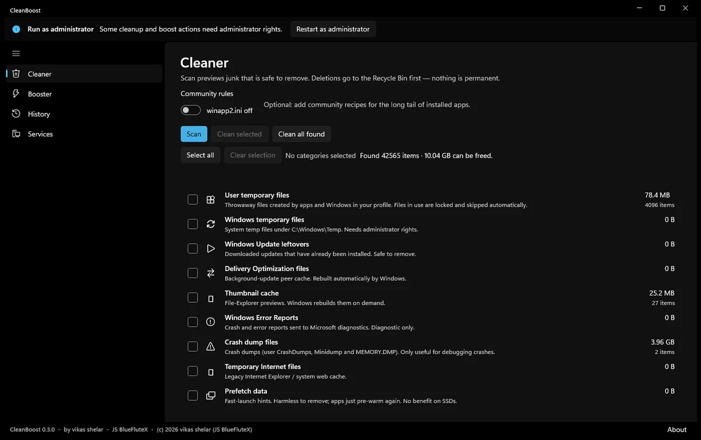
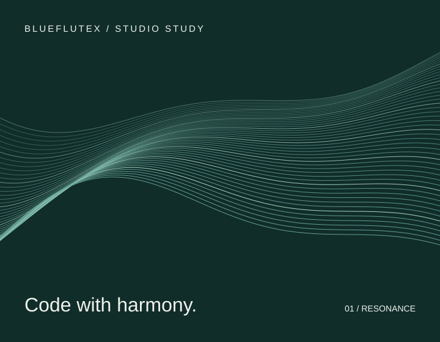

Android
Native Kotlin and cross-platform apps built for real device matrices, not emulators.
KotlinJetpackFlutter
We design and engineer mobile, desktop and AI systems for teams building something that matters. From the first idea to what comes next. Scroll to fly through the collection.
Scroll or swipe to fly through the collection. Use the arrow keys to move, or Home to return to the introduction. Select an image to explore it.
What we believe
We don’t ship templates. We ship systems — architected to be read by the next person, extended by the next team, and still standing years later.
Code should explain itself to a stranger. If it needs a comment to be understood, it needs a rewrite.
Budget, deadline and legacy shape the answer. We design inside them rather than around them.
Documentation, tests and a deploy pipeline are deliverables — not a favour we add if asked.
What we build
Native Kotlin and cross-platform apps built for real device matrices, not emulators.
KotlinJetpackFlutter
Swift and SwiftUI apps that respect platform conventions instead of fighting them.
SwiftSwiftUIXcode
Cross-platform desktop software that starts fast and stays responsive under load.
Tauri.NETElectron
Playable work across mobile, PC and console — scoped so the fun arrives before the budget runs out.
UnityUnrealGodot
Retrieval, inference and analytics wired into products — with the evaluation harness that keeps it honest.
LLM appsRAGPython
Second opinions on the systems you already own — code review, risk assessment, migration plans.
ReviewMigrationStrategy
Selected work · 01 public project
Explore CleanBoost, our open-source Windows application, and the decisions behind the build.
A one-click Windows cleaner where the hard part wasn’t the cleaning — it was making every deletion reversible and visible. Every removal routes through the Recycle Bin, and the interface reports the outcome of each individual file while the run is in progress.
THE IDEA
Make system cleanup understandable while it runs: clear categories, a visible per-file outcome, and no silent “trust us” deletion.
SAFE BY DESIGN
A single deletion funnel brings the path guard, symlink refusal, Recycle Bin routing and audit logging into the same controlled path.
THE BUILD
The public project includes 22 curated cleanup categories, 4,000+ community rules and 46 automated tests. It is published under the MIT licence.

Actual product screenshotMore projects will appear here as additional work is ready for public release.
How we work
We start from the problem and the constraints, not the feature list you were handed.
Data model, module boundaries and failure modes settled before anyone opens a design file.
Weekly builds you can click on, with the trade-offs written down rather than presented.
Tests, docs and a deploy pipeline, so your team owns the system and we are not a dependency.
The studio
A flute makes sound from tuned air. Software makes results from tuned systems — and it is just as easy to play out of tune. The name is a reminder that precision and restraint are what make the result sing.
We are a small team in Pune, India. We take a deliberately small number of engagements so the people you meet are the people who build it.

Get in touch
A paragraph is plenty. What it does, who it’s for, and when it needs to exist. We reply within two working days.